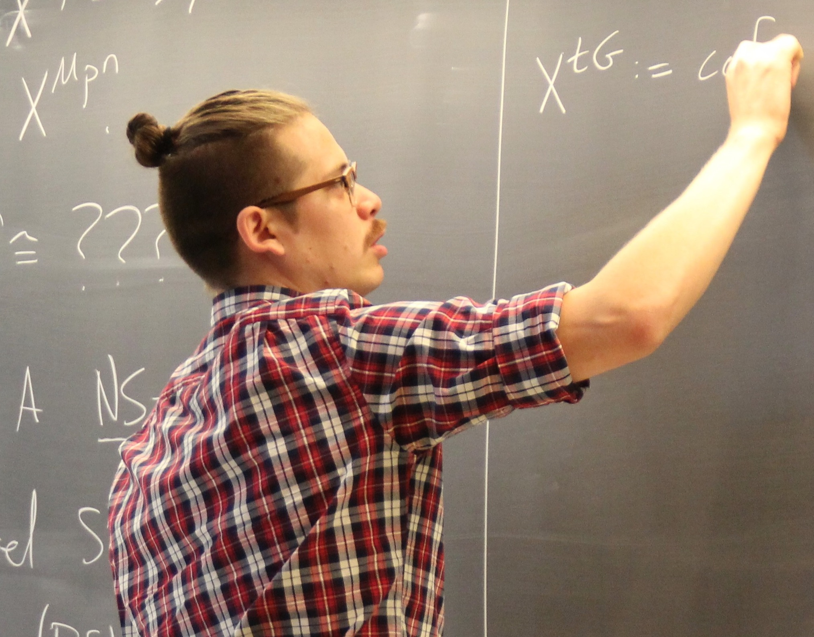

J.D. Quigley
Email address: jquigley1993 at gmail dot com
Office: 580 Malott Hall
CV
I am a mathematician interested in algebraic K-theory, trace methods, and classical, equivariant, and motivic stable homotopy theory. I will be visiting the Max Planck Institute for Mathematics in Bonn from August 2022 until December 2022. Starting January 2023, I will be a Postdoctoral Scholar at the University of Oregon.
I also co-organize the Electronic Computational Homotopy Theory online research community with Dan Isaksen, Hana Jia Kong, and Guchuan Li.
Research
- Ranks of RO(G)-graded stable homotopy groups of spheres for finite groups G, with J.P.C. Greenlees. Submitted. arXiv.
- The motivic lambda algebra and motivic Hopf invariant one problem, with William Balderrama and Dominic Culver. Submitted. arXiv. Calculator.
- On the equivalence between two theories of real cyclotomic spectra, with Jay Shah. Submitted. arXiv.
- On the parametrized Tate construction, with Jay Shah. Submitted. arXiv.
- Tate blueshift and vanishing for Real oriented cohomology, with Guchuan Li and Vitaly Lorman. Submitted. arXiv. Video.
- On the parametrized Tate construction and two theories of real cyclotomic spectra, with Jay Shah. Split into separate papers and expanded. arXiv.
- Chromatic complexity of the algebraic K-theory of y(n), with Gabriel Angelini-Knoll. Submitted. arXiv.
- The 2-primary Hurewicz image of tmf, with Mark Behrens and Mark Mahowald. To appear in Geom. Topol. arXiv.
- Free incomplete Tambara functors are almost never flat, with Mike Hill and David Mehrle. To appear in Int. Math. Res. Notices arXiv. Video.
- tmf-based Mahowald invariants. To appear in Algebr. Geom. Topol. arXiv. E8-page of AHSS for C2-Tate of tmf.
- Algebraic slice spectral sequences, with Dominic Culver and Hana Jia Kong. Doc. Math. 26 (2021), 1085-1119. arXiv. Slides and video.
- Motivic Mahowald invariants over general base fields. Doc. Math. 26 (2021), 561-582. arXiv.
- kq-resolutions I, with Dominic Culver. Trans. Amer. Math. Soc. 374-7 (2021), 4655-4710. arXiv.
- Real motivic and C2-equivariant Mahowald invariants. J. Topol. 14-2 (2021), 369-418. arXiv.
- The Segal Conjecture for topological Hochschild homology of the Ravenel spectra, with Gabriel Angelini-Knoll. J. Htpy. Rel. Str. 16-1 (2021), 41-60. arXiv.
- The motivic Mahowald invariant. Algebr. Geom. Topol. 19-5 (2019), 2485-2534. arXiv.
- Computing primitively-rooted squares and runs in partial words, with F. Blanchet-Sadri, J. Lazarow, J. Nikkel, and X. Zhang. Eur. J. Comb. 68 (2018), 223-241.
- Squares and primitivity in partial words, with F. Blanchet-Sadri, M. Bodnar, J. Nikkel, and X. Zhang. Disc. Appl. Math. 185 (2015), 26-37.
- Squares in partial words, with F. Blanchet-Sadri, Y. Jiao, J. M. Machacek, and X. Zhang. Theoret. Comp. Sci. 530 (2014), 42-57.